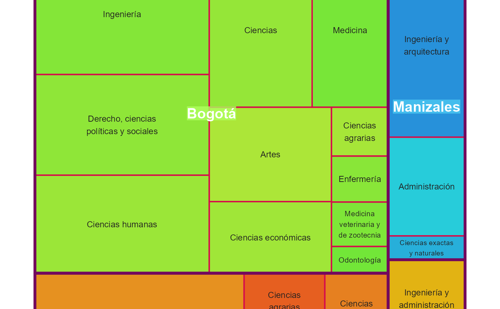

Plot.Treemap.RdEsta función proporciona excelentes herramientas y opciones para la visualización
de datos jerárquicos/estructurados como un conjunto de rectángulos anidados.
Cada grupo está representado por un rectángulo, cuya área (tamaño) es
proporcional a su frecuencia absoluta (recuento) y el color se usa para
mostrar otra dimensión numérica. Usando la interactividad, es posible representar
varias dimensiones/niveles: grupos, subgrupos, etc. Dicha gráfica se va a
representar usando la librería Highcharter, Plotly, d3treeR, entre otras,
las cuales usan internamente JavaScript.
Un data frame, no un vector numérico.
Una lista (ya sea creada con la sintaxis base o tidy)
con las variables categóricas dentro del data frame ingresado en datos con
las que se desea crear la jerarquía (recuerde que esta se crea de izquierda
a derecha, es decir la primera hace referencia al grupo, la segunda al subgrupo,
etc.).
Una variable numérica dentro del data frame ingresado en datos.
Este es opcional y solo aplica en el caso de un nivel, es decir, cuando se
ingresa únicamente una variable.
Cadena de caracteres indicando el nombre que se le va a dar al recuento en cada uno de los grupos. Por defecto se emplea el rótulo "N".
Cadena de caracteres indicando el diseño con el cual se realizará
el gráfico (en el caso de ingresar dos niveles o más). Los valores permitidos
son "Classic" (valor predeterminado), "Classic2", "Sunburst" y
"Sunburst2", así se usará las funciones d3tree(),
d3tree2(), sunburst() y
sund2b() respectivamente.
Igual uso que en Plot.Mapa()
Igual uso que en Plot.Series(), con algunos matices, cuando
usamos Highcharter y nos encontramos en el caso de un nivel y especificamos
un atributo es recomendable pasarle una escala de colores, pues con esto se
construirá la barra horizontal. En el caso de usar el argumento atributo
se puede ingresar el nombre de una paleta, por ejemplo "Set1".
Cadena de caracteres indicando el título principal del plot.
Igual uso que en Plot.Torta(), con algunos matices, pues
en el caso de ingresar más de una variable categórica se omitirá dicho
argumento, ya que metodo tomará su lugar.
Lista compuesta por varios parámetros, los cuales van a ser usados para graficar el treemap y cuyo objetivo es personalizar pequeños detalles de éste.
hc.Tema y hc.Credits: Igual uso que en Plot.Series()
hc.borderRadius: Un número entero positivo que indica el radio del borde
de cada elemento. El valor por defecto es 0 (rectángulos).
ply.Opacidad: Igual uso que en Plot.Radar()
ply.Credits: Igual uso que en Plot.Series()
sun.Explanation: Cadena de caracteres indicando qué es lo que se desea
ver en el centro del sunburst al pasar el mouse por los diferentes anillos
(niveles de la jerarquía). Los valores permitidos son "All"
(valor predeterminado), "Count" y "Percent". Solo aplica para cuando
metodo = "Sunburst".
sun.Color: A diferencia del argumento colores acá puede pasar una paleta
o vector de colores sin que se recorte (más no se recicle) éste a
la longitud de categorías del nodo padre. Su uso reemplaza el funcionamiento
del argumento colores. Solo aplica para cuando metodo = "Sunburst".
sun.showLabels: Si es FALSE (valor predeterminado) no se mostrará
etiquetas en los cortes. Solo aplica para cuando metodo = "Sunburst2".
sun.colorRoot: Cadena de caracteres que indica el color del nodo raíz
(root). Puede indicar el color con el nombre ("red"), código
hexadecimal ("#FF0000") o RGB (rgb(1, 0, 0)). El valor por defecto es
"rojo". Solo aplica para cuando metodo = "Sunburst2".
gg.fontsize.title: Tamaño de la fuente del título. El valor por defecto
es 14. Para más detalles, consulte la función treemap().
gg.fontsize.labels: Tamaño de la fuente de las etiquetas. Si ingresa un
número especificará el tamaño para todos los niveles de agregación, por el
contrario, si ingresa un vector podrá especificar el tamaño para cada nivel.
El valor por defecto es 11. Para más detalles, consulte la función treemap().
gg.fontcolor.labels: Especifica los colores de la etiqueta. Ya sea una
cadena de caracteres o un vector (uno para cada nivel de agregación).
El valor por defecto es NULL. Para más detalles, consulte la función treemap().
gg.border.lwds: Tamaño de las líneas de borde. Si ingresa un número
especificará el grosor para todos los rectángulos, o un vector para
especificar el grueso para cada nivel de agregación. Para más detalles,
consulte la función treemap().
gg.border.col: Color de los bordes dibujados alrededor de cada rectángulo,
ya sea un valor único o un vector. El valor por defecto es '#000000'.
Para más detalles, consulte la función treemap().
gg.lowerbound.cex.labels: Número entre \([0, 1]\), 0 significa dibujar
todas las etiquetas y 1 significa dibujar sólo las etiquetas si encajan
(considerando el fontsize.labels). El valor por defecto es 0.4.
Para más detalles, consulte la función treemap().
gg.force.print.labels: Si es FALSE (valor predeterminado) las
etiquetas de datos no se ven obligadas a imprimirse si no encajan. Para
más detalles consulte la función treemap().
gg.overlap.labels: Número entre \([0, 1]\), que determina la tolerancia
de superposición entre etiquetas. 0 significa que las etiquetas de los
niveles inferiores no se imprimen si las etiquetas de los niveles superiores
se superponen, 1 significa que las etiquetas siempre se imprimen. El valor
por defecto es 0.5. Para más detalles, consulte la función treemap().
Si es FALSE (valor predeterminado) el gráfico a retornar
será dinámico (dependiendo de la librería seleccionada), en caso contrario
se retornará un gráfico estático construido con ggplot2.
Retorna el treemap (objeto widget de HTML) creado. La clase del objeto retornado será un "htmlwidget" y dependiendo de la librería usada pertenecerá adicionalmente a la clase "highchart", "plotly", " d3tree", "d3tree2", "sunburst" o "sund2b".
Si está trabajando en un R Markdown o un aplicativo Shiny no se puede usar
de forma conjunta el método = Classic (o Classic2) y método = Sunburst
(o Sunburst2), pues se trata de un problema interno, ya que usan versiones
diferentes de d3, puede darle seguimiento al problema
aquí. De igual forma,
si utiliza la librería sunburstR en algunas ocasiones se le verán afectadas
las tablas creadas con DT.
Sabemos que puede ser abrumador el número de argumentos dentro del parámetro
estilo, pero es necesario si queremos ofrecer al usuario la máxima
personalización dentro de cada función usando cualquier librería. Por tal
razón, a continuación, se detalla el listado completo de argumentos, usados
al especificar la librería y en qué función están presentes
(marcado con una × si lo posee).
| Librería | estilo$ | Plot.Series() | Plot.Barras() | Plot.Apiladas() | Plot.Boxplot() | Plot.Radar() | Plot.Treemap() | Plot.Torta() | Plot.Drilldown() |
| ┌ | gg.Tema | × | × | × | × | ||||
| │ | gg.Texto | × | × | × | × | ||||
| │ | gg.Legend | × | × | × | |||||
| │ | gg.Linea | × | |||||||
| │ | gg.Punto | × | |||||||
| │ | gg.Bar | × | × | ||||||
| │ | gg.VarWidth | × | |||||||
| │ | gg.OutShape | × | |||||||
| │ | gg.JitWidth | × | |||||||
| │ | gg.JitSize | × | |||||||
| │ | gg.Range | × | |||||||
| ggplot2 | gg.plty | × | |||||||
| │ | gg.plwd | × | |||||||
| │ | gg.cglwd | × | |||||||
| │ | gg.cglcol | × | |||||||
| │ | gg.fontsize.title | × | |||||||
| │ | gg.fontsize.labels | × | |||||||
| │ | gg.fontcolor.labels | × | |||||||
| │ | gg.border.lwds | × | |||||||
| │ | gg.border.col | × | |||||||
| │ | gg.lowerbound.cex.labels | × | |||||||
| │ | gg.force.print.labels | × | |||||||
| └ | gg.overlap.labels | × | |||||||
| ╔ | hc.Tema | × | × | × | × | × | × | × | |
| ║ | hc.Credits | × | × | × | × | × | × | × | |
| highcharter | hc.BoxInfo | × | |||||||
| ║ | hc.Slider | × | |||||||
| ╚ | hc.borderRadius | × | |||||||
| ┌ | ply.Credits | × | × | × | × | × | × | × | |
| │ | ply.Legend | × | × | ||||||
| │ | ply.LegendPosition | × | × | × | × | ||||
| plotly | ply.Interaction | × | × | ||||||
| │ | ply.Relleno | × | |||||||
| │ | ply.Opacidad | × | × | ||||||
| └ | ply.LegendTitle | × | |||||||
| dygraphs | dyg.LegendWidth | × | |||||||
| ╚ | dyg.Resaltar | × | |||||||
| ┌ | e.Tema | × | |||||||
| │ | e.Credits | × | |||||||
| echarts4r | e.Forma | × | |||||||
| │ | e.LegType | × | |||||||
| └ | e.LegLoc | × |
library(viridis)
Msj <- "Acompa\u00f1ado del Estad\u00edstico seleccionado para la Variable Edad."
Plot.Treemap(
datos = ejGraduados,
variables = SEDE_NOMBRE_MAT,
atributo = EDAD_MOD,
textFreq = "Tamaño de la Muestra",
estadistico = "Max",
colores = inferno(10),
titulo = "TOTAL DE GRADUADOS POR SEDE DE LA UNIVERSIDAD NACIONAL",
libreria = "highcharter",
estilo = list(hc.Tema = 7, hc.borderRadius = 20, hc.Credits = Msj)
)
# ---------------------------------------------------------------------------
Plot.Treemap(
datos = ejGraduados,
variables = FACULTAD,
atributo = EDAD_MOD,
textFreq = "n",
estadistico = "CV",
colores = turbo(10, direction = -1),
titulo = "TOTAL DE GRADUADOS POR FACULTAD EN LA UNAL",
libreria = "plotly",
estilo = list(ply.Credits = list(x = 0.6, y = 1, text = Msj))
)
if (FALSE) { # all(FALSE)
# ---------------------------------------------------------------------------
# library(dplyr)
misColores <- c(
"#29ABE2", # AZUL CLARO | Amazonia
"#8CC63F", # VERDE | Bogota
"#CC241D", # ROJO | Caribe
"#0071BC", # AZUL VIVO | Manizales
"#F15A24", # NARANJA | Medellin
"#FBB03B", # AMARILLO | Orinoquia
"#93278F", # MORADO | Palmira
"#8A381A" # GRIS | Tumaco
)
Plot.Treemap(
datos = ejGraduados,
variables = vars(SEDE_NOMBRE_MAT, FACULTAD, PROGRAMA),
metodo = "Classic",
colores = misColores # "Set3"
)
Plot.Treemap(
datos = ejGraduados,
variables = vars(SEDE_NOMBRE_MAT, FACULTAD, PROGRAMA),
metodo = "Classic2",
colores = "Set2"
)
Plot.Treemap(
datos = ejGraduados,
variables = vars(SEDE_NOMBRE_MAT, FACULTAD, PROGRAMA),
metodo = "Sunburst",
colores = misColores,
estilo = list(sun.Explanation = "All")
)
Plot.Treemap(
datos = ejGraduados,
variables = vars(SEDE_NOMBRE_MAT, FACULTAD, PROGRAMA),
metodo = "Sunburst",
# colores = misColores,
estilo = list(sun.Explanation = "All", sun.Color = list(range = RColorBrewer::brewer.pal(11, "Spectral")))
)
Plot.Treemap(
datos = ejGraduados,
variables = vars(SEDE_NOMBRE_MAT, FACULTAD, PROGRAMA),
metodo = "Sunburst2"
)
Plot.Treemap(
datos = ejGraduados,
variables = vars(SEDE_NOMBRE_MAT, FACULTAD, PROGRAMA),
metodo = "Sunburst2",
colores = misColores,
estilo = list(sun.showLabels = TRUE, sun.colorRoot = "#EF0055")
)
}
# ---------------------------------------------------------------------------
# Ejemplo usando el caso estático (treemap)
# library(dplyr)
Plot.Treemap(
datos = ejGraduados,
variables = vars(SEDE_NOMBRE_MAT, FACULTAD),
colores = c("#FF3232", "#AFFF5E", "#FD6DB3", "#4CCAF2", "#FF9248", "#FBB03B"),
titulo = "TOTAL DE GRADUADOS \u00d7 SEDE",
estatico = TRUE,
estilo = list(
gg.fontsize.title = 12, gg.fontsize.labels = c(15, 9),
gg.fontcolor.labels = c("#FFFFFF", "#212020"),
gg.border.lwds = c(4, 2), gg.border.col = c("#73095D", "#D60D4B"),
gg.lowerbound.cex.labels = 0.3, gg.overlap.labels = 0.1
)
)
